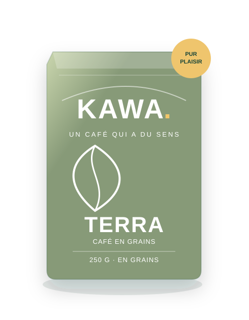
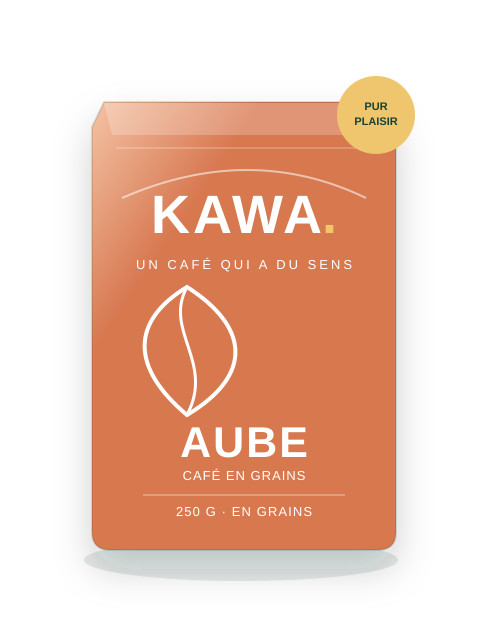
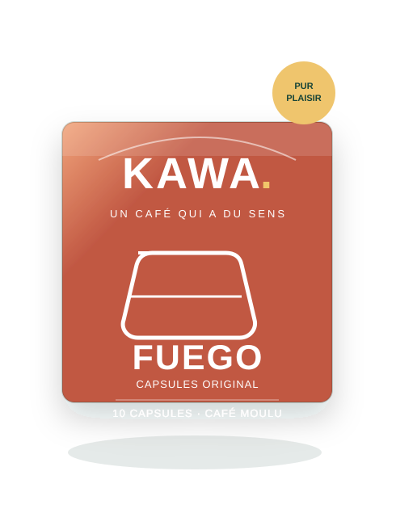

Un café.
Toutes vos
envies✳
Trois profils aromatiques, deux formats et toujours la possibilité de choisir le décaféiné. Des cafés équitables dans l'esprit, du plaisir dans chaque tasse.



YOUR
MOMENTS ✳
LE CONCEPT KAWA 01 / 05
Le même bon café.
Votre façon de le savourer.
Plutôt machine à grains ou espresso en capsules ? Vous choisissez le goût, puis le format et l'option décaféinée. Rien de compliqué, juste le plaisir de trouver sa tasse.
✳ LA COLLECTION
Trois cafés.
Douze possibilités.
Chaque recette existe en grains (250 g) et en capsules compatibles Nespresso Original (10), avec ou sans caféine.
KAWA
* Capsules KAWA conçues pour le système Nespresso® Original uniquement, non compatibles Vertuo®. KAWA n'est pas affiliée à Nespresso. Produits et compatibilité présentés à titre fictif dans ce projet étudiant.
♡ UNE PETITE ATTENTION, UN GRAND PLAISIR
Offrez du café.
Offrez un moment.
Des coffrets imaginés pour une seule personne : anniversaire, remerciement, ou juste pour faire plaisir.
special ♡
Le café idéal ?
On le trouve
ensemble.
Quatre petites questions pour trouver le café qui vous ressemble — ou faire un cadeau vraiment bien choisi.
PEUT CHANGER
DES CHOSES✳
✳ NOS ENGAGEMENTS
Bon dans la tasse.
Juste dans l’idée.
KAWA imagine une filière de café reposant sur les principes du commerce équitable : une rémunération plus juste des producteurs, des relations commerciales durables et des critères sociaux et environnementaux.
Objectif : certification Fairtrade / Max Havelaar
Dans notre scénario fictif, les cafés KAWA sont imaginés comme certifiés Fairtrade/Max Havelaar. Ceci n'est pas une certification réelle : KAWA est une entreprise créée pour un projet étudiant, sans contrôle ni licence officielle.
Comprendre le vrai label ↗VOTRE BARISTA VIRTUEL, DANS LA POCHE
Un doute ?
Demandez à KAWI.
Un cadeau à choisir, une question sur les capsules ou un café à découvrir ? Notre assistant IA vous guide simplement, à votre rythme.
LES RÉPONSES, SANS BLABLA
Une question ?
On est là.
Les mêmes cafés existent-ils en grains et en capsules ? +
Oui ! AUBE, TERRA et FUEGO sont proposés dans les deux formats, chacun disponible en classique ou en décaféiné. Les grains sont vendus par 250 g, les capsules par étui de 10.
Vos capsules fonctionnent-elles avec ma Nespresso ? +
Les capsules fictives KAWA sont destinées aux machines Nespresso Original. Elles ne conviennent pas au système Vertuo. Nespresso est une marque de tiers sans lien avec KAWA.
Vos cafés sont-ils certifiés équitables ? +
La marque KAWA est fictive. Dans notre scénario, son objectif est la certification Fairtrade/Max Havelaar. Aucune certification réelle n'a été obtenue ou vérifiée pour ces produits de démonstration.
Quel coffret offrir à une seule personne ? +
Le coffret Douceur mise sur un café doux, Découverte propose plusieurs goûts, et le coffret Sur-mesure permet de sélectionner un profil, un format et une version décaféinée ou non. Notre quiz vous aide à choisir !
Combien coûte la livraison ? +
Dans cette simulation, les frais sont de 4,90 € en France en dessous de 35 € d'achat, et la livraison est offerte à partir de 35 €. Aucun achat réel n'est possible.
Peut-on réellement commander sur ce site ? +
Non, KAWA est un projet académique. Le panier et les coffrets sont interactifs pour la démonstration, mais aucun paiement, envoi ou suivi de commande n'est effectué.